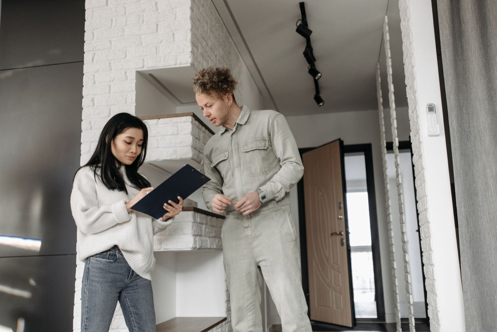

How Often Should You Get Your Carpets Professionally Cleaned?
Carpet looks clean long before it actually is. Dust, allergens, and bacteria settle deep into the fibers long before stains or odors show…
Read more →Guides and tips on carpet cleaning, upholstery cleaning, area rugs, pet odor treatment, stain removal, and mattress cleaning across Fairfield County and New Haven County.
Carpet looks clean long before it actually is. Dust, allergens, and bacteria settle deep into the fibers long before stains or odors show…
Read more →
Pet odor is rarely just a surface problem. Once urine or accidents soak into carpet padding or upholstery fill, regular vacuuming and…
Read more →
Your sofa absorbs more daily wear than almost any other piece of furniture in the house. Here's what a professional upholstery cleaning…
Read more →
It's tempting to treat an area rug like an extension of your wall-to-wall carpet, but the two need different care. Area rugs are often…
Read more →
A mattress sits under a sleeper for roughly eight hours a night, every night, quietly collecting dust, dead skin cells, and the allergens…
Read more →
Carpet in a commercial space takes a different kind of beating than carpet at home. Lobbies, hallways, and conference rooms see far more…
Read more →
Not every stain responds to the same treatment, and the wrong first move can set a stain permanently before a professional ever sees it. A…
Read more →
Buyers notice carpet condition faster than almost anything else in a showing. Worn traffic lanes, pet odor, or visible stains can make an…
Read more →
A sectional sees more daily use than almost any other piece of furniture in the house, which means a little upkeep between professional…
Read more →
Not every carpet cleaning company in New Haven County offers the same level of service, and it's worth asking a few questions before…
Read more →
Cleaning 1,000 square feet of carpet typically costs between $250 and $450, depending on carpet condition, the number of rooms involved,…
Read more →The best-reviewed carpet cleaning companies share three traits: consistent 5-star ratings, trained and insured technicians, and clear,…
Read more →
Most professional carpet cleaning costs fall between $30 and $80 per room, or roughly $0.25 to $0.45 per square foot, depending on carpet…
Read more →
Yes, professional sofa cleaning is worth it for most households, especially homes with kids, pets, or sofas that haven't been deep cleaned…
Read more →Call BluePeak Cleaning Co. today for a free estimate.